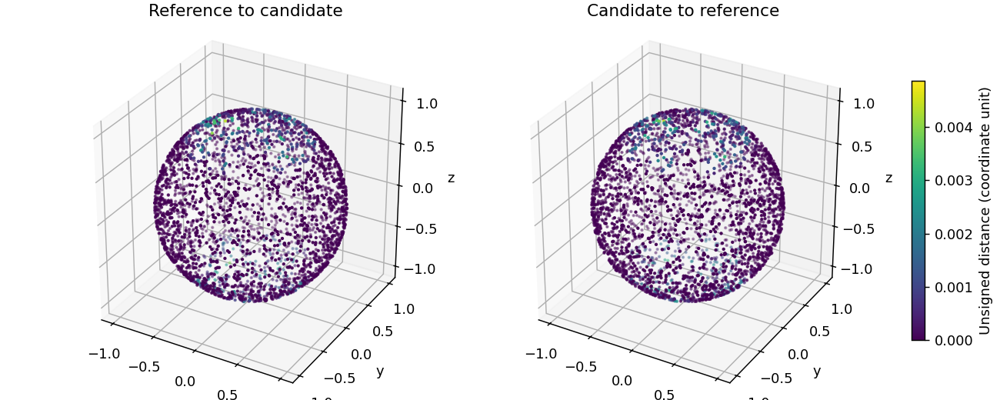

任务：候选独立复核 · 本报告仅说明本次处理及验证范围。
输入：D:\作业\Medical_3D_model\results\workflow_ui_verification\runs\verify_e5015017bc\input.npz
输入版本：107a532efa034929b80a021f90f266ae
任务编号：verify_e5015017bc
计算用时：1.316911 秒
执行：计算完成 判定：复核通过（仍需人工接受） 质量：通过
输入版本：107a532efa034929b80a021f90f266ae。未提供成员1完整复检时，不认定优化正式合格；体积未获闭合、方向、自交及实体归属验证时记为不可用。未执行步骤保留为未执行。
| 方案 | 处理参数 | 三角面数 | 执行状态 | 判定 | D95 | 采样最大偏差 | 面积变化比例 | 围合体积变化比例 | 体积验证 | 未通过原因 | 错误 |
|---|---|---|---|---|---|---|---|---|---|---|---|
| candidate_00 | 保留比例：0.8；方法：QEM简化；Taubin平滑次数：0 | 768 | 计算完成 | 复核通过（仍需人工接受） | 0.001523303 | 0.004869497 | 0.0001033828 | 0.0002703719 | verified_single_closed_shell | ||
| candidate_01 | 保留比例：0.8；方法：QEM简化；Taubin平滑次数：5 | 768 | 计算完成 | needs_review | 0.004116664 | 0.006755838 | 0.004566364 | 0.006674975 | verified_single_closed_shell | ||
| candidate_02 | 保留比例：0.8；方法：QEM简化；Taubin平滑次数：10 | 768 | 计算完成 | needs_review | 0.007989935 | 0.01128226 | 0.009401441 | 0.01384153 | verified_single_closed_shell | ||
| candidate_03 | 保留比例：0.5；方法：QEM简化；Taubin平滑次数：0 | 480 | 计算完成 | needs_review | 0.007847451 | 0.01541583 | 0.0009662302 | 0.003713693 | verified_single_closed_shell | ||
| candidate_04 | 保留比例：0.5；方法：QEM简化；Taubin平滑次数：5 | 480 | 计算完成 | needs_review | 0.01005603 | 0.01356719 | 0.004374016 | 0.003787473 | verified_single_closed_shell | ||
| candidate_05 | 保留比例：0.5；方法：QEM简化；Taubin平滑次数：10 | 480 | 计算完成 | needs_review | 0.01340172 | 0.01936389 | 0.01049683 | 0.01239152 | verified_single_closed_shell | ||
| candidate_06 | 保留比例：0.3；方法：QEM简化；Taubin平滑次数：0 | 288 | 计算完成 | 复核通过（仍需人工接受） | 0.01101945 | 0.01768805 | 0.002592615 | 0.008321352 | verified_single_closed_shell | ||
| candidate_07 | 保留比例：0.3；方法：QEM简化；Taubin平滑次数：5 | 288 | 计算完成 | needs_review | 0.01323545 | 0.02079226 | 0.004098058 | 0.0009544149 | verified_single_closed_shell | ||
| candidate_08 | 保留比例：0.3；方法：QEM简化；Taubin平滑次数：10 | 288 | 计算完成 | needs_review | 0.01725606 | 0.02848309 | 0.01189121 | 0.01174461 | verified_single_closed_shell |
D95/包围盒对角线 ≤ 0.1；采样最大偏差/对角线 ≤ 0.1；面积相对变化 ≤ 0.5。例如0.1为对角线10%，面积0.5为50%，均属于宽松的流程测试范围，不能用来证明高精度。
| 方案 | D95/对角线实测 | 最大偏差/对角线实测 | 面积变化实测 | 拒绝原因 |
|---|---|---|---|---|
| candidate_00 | 0.0004397397 | 0.001405703 | 0.0001033828 | 无拒绝原因 |
| candidate_01 | 0.001188379 | 0.001950242 | 0.004566364 | 无拒绝原因 |
| candidate_02 | 0.002306496 | 0.003256907 | 0.009401441 | 无拒绝原因 |
| candidate_03 | 0.002265364 | 0.004450167 | 0.0009662302 | 无拒绝原因 |
| candidate_04 | 0.002902925 | 0.00391651 | 0.004374016 | 无拒绝原因 |
| candidate_05 | 0.003868742 | 0.005589874 | 0.01049683 | 无拒绝原因 |
| candidate_06 | 0.003181041 | 0.005106102 | 0.002592615 | 无拒绝原因 |
| candidate_07 | 0.003820746 | 0.006002208 | 0.004098058 | 无拒绝原因 |
| candidate_08 | 0.004981395 | 0.00822236 | 0.01189121 | 无拒绝原因 |

本次没有记录执行错误。请结合结构检查、误差门槛及人工预览判断结果。
ASD为双向平均表面距离；D95为双向采样距离的95百分位；采样最大偏差仅为本次样本中最大值，不是严格Hausdorff上界。面积及围合体积变化为相对变化比例；未知单位不解释为毫米。两侧误差图采用相同色标，灰色面表示未采样。
计算完成、结构通过、几何阈值通过与用户接受是不同状态。待接受预览不会自动替换正式版本；独立评价和格式转换也不会替换正式网格。临床有效性、通用曲面重建和第三方软件兼容性不能由本报告单独认定。原始审计数据另外保存在任务目录中。